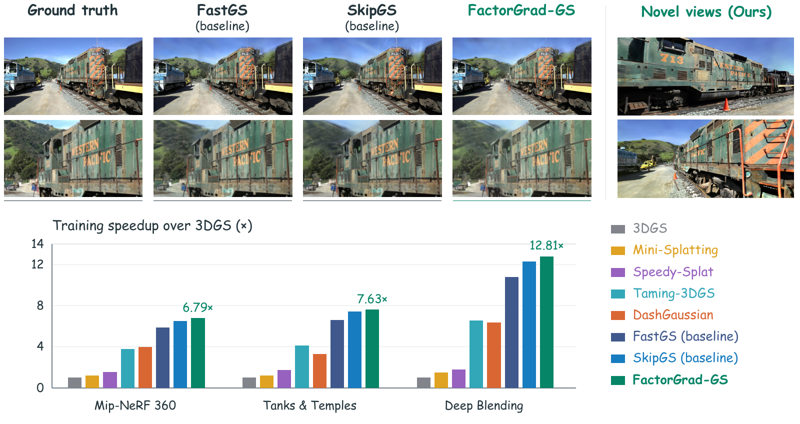
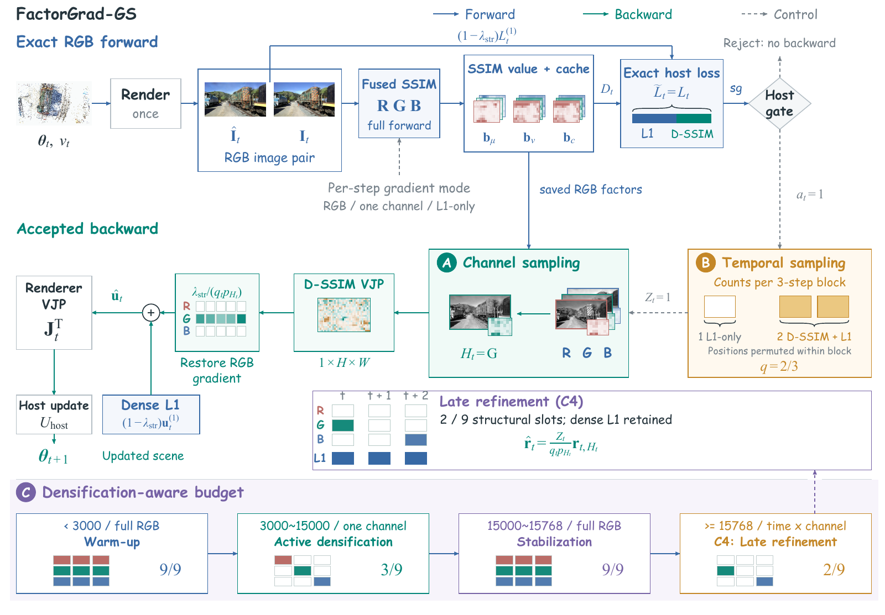
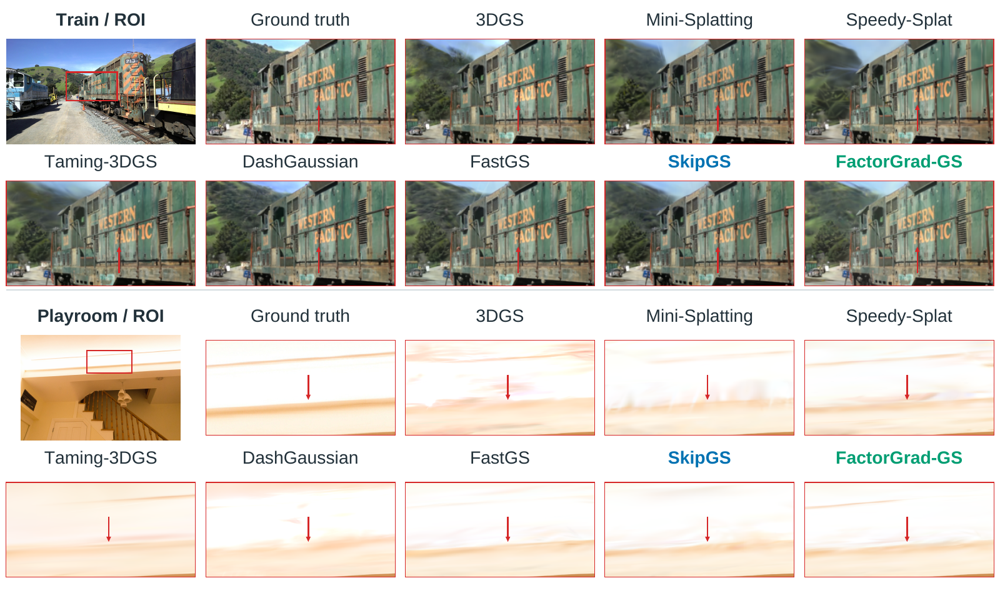
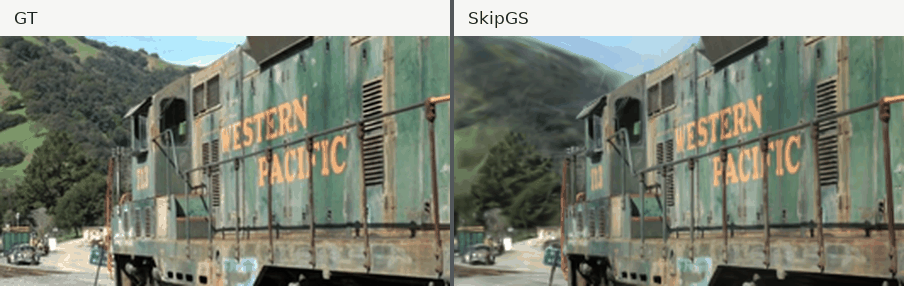
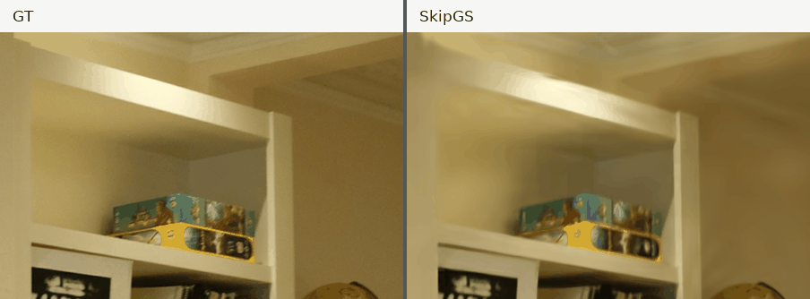
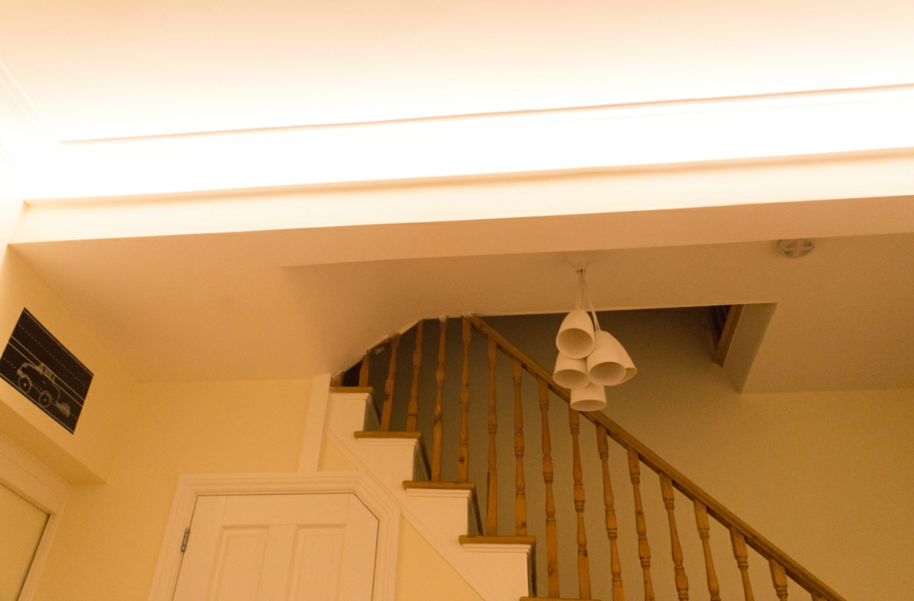
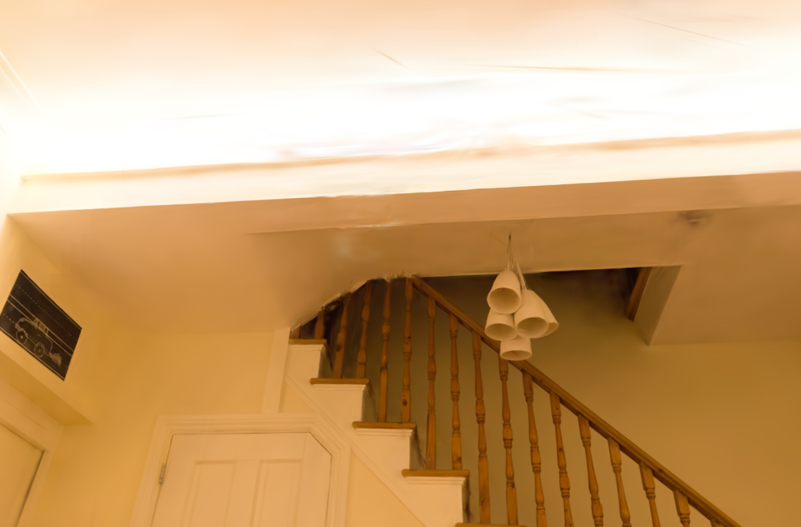
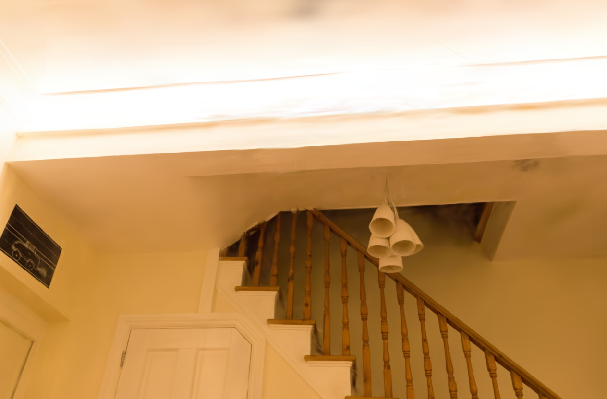

Preserve the objective
Compute the full RGB structural value with a selective fused-SSIM path, so the host gate receives the exact scalar objective.
Anonymous research manuscript · 3D Gaussian Splatting
Keep the structural loss value exact. Sample the structural gradient where it costs the most.
FactorGrad-GS retains dense ℓ1 supervision and the exact D-SSIM forward value, while sampling D-SSIM derivatives across color channels and training iterations.

From the paper
These are total training speedups relative to 3DGS in the paper's comparison, not the incremental gain from structural-gradient sampling alone.
Method
One rendering pass supplies the image pair and the exact scalar loss. FactorGrad-GS spends fewer backward operations on structural terms while preserving dense ℓ1 gradients.
Compute the full RGB structural value with a selective fused-SSIM path, so the host gate receives the exact scalar objective.
Use inverse-probability-weighted color-channel and temporal sampling for D-SSIM derivatives, alongside dense ℓ1 supervision.
Use channel-only sampling during growth, restore full RGB after densification, then enable temporal sampling during late refinement.

Matched comparison
Under the paper's matched SkipGS protocol across 13 scenes and three fixed-seed executions, FactorGrad-GS reduces mean training time by about 3.9%.
| Method | PSNR ↑ | SSIM ↑ | LPIPS ↓ | Time ↓ |
|---|---|---|---|---|
| SkipGS | 27.32 ± 0.02 | 0.8185 ± 0.0001 | 0.2569 ± 0.0001 | 2622.7 ± 17.7 s |
| FactorGrad-GS | 27.28 ± 0.02 | 0.8176 ± 0.0003 | 0.2578 ± 0.0001 | 2520.0 ± 16.8 s |
The figures report the paper's matched protocol. PSNR and SSIM are higher-is-better; LPIPS and training time are lower-is-better.

Visual evidence
Five representative scenes place ground truth on the left while the right side alternates between SkipGS and FactorGrad-GS. The still comparison below also includes close-up views.


Scenes are from Mip-NeRF 360, Tanks & Temples, and Deep Blending. Dataset and baseline citations are listed in the manuscript.
Frame comparison



Resources
Read the manuscript or use the source repository for implementation and reproduction instructions.